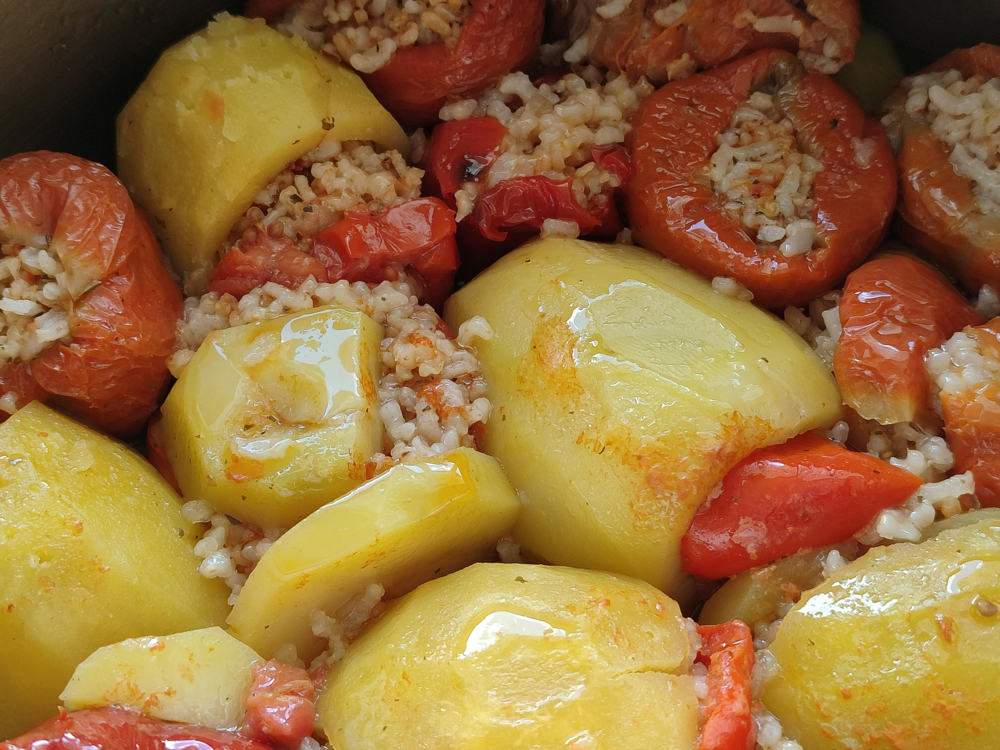

Gemista

Photo by Nur Tok
About Gemista
"Gemista" or Stuffed foods are called these dishes of many peoples that usually consist of vegetables and a filling of rice (many call them "orphans") or meat or a mixture of the two ("married"). Sometimes original and seafood are used as fillings, such as squid or mussels, while rice is replaced by plugouri or minced vegetables. They are cooked mainly in the summer, as at that time the vegetables that he published ripen, and because it is a light food, it can be eaten comfortably in hot weather, as a hot or cold dish.
Ingredients
- 3 onions
- 6 tomatoes
- 3 green peppers
- 350 g. glazed rice
- 500 g. baby potatoes
- 8 tbsp. olive oil
- 2 cloves garlic
- 1 zucchini
- 1 carrot
- 1 tbsp. granulated sugar
- 1 tbsp. tomato paste
- 600 g. water
- 1 bunch of parsley
- 1 bunch of mint
- 1/3 bunch of dill
- salt, enough
- pepper, enough
Steps
- Preheat the oven to 180°C in air.
- Cut the potatoes into wedges, leaving the skin on to make them tastier.
- Place a frying pan over high heat, add 2 tbsp. olive oil and let it heat.
- Add the potatoes, sprinkle with salt and pepper, and sauté for 4-5 minutes.
- Remove the pan from the heat, transfer to an ovenproof baking tray and set aside.
- Cut the onions at the top to create a lid.
- Empty all the flesh with the help of a spoon, leaving 4-5 leaves and put them in the baking tray.
- Finely chop all the filling from the onions, put it in a bowl and set aside.
- With a sharp knife, cut a ½-1 cm lid from the bottom of each tomato.
- Empty all the flesh with the help of a spoon, being careful not to make holes, and pour it into a bowl.
- Place the tomatoes in the pan with the stem down.
- Press the filling from the tomatoes a little with our hands to remove the liquids and set aside.
- Cut the base of the peppers a little so that they can sit in the pan.
- Cut the lid about ½-1 cm below the stem.
- Remove the seeds and place the peppers in the pan.
- Place a non-stick pan over high heat, add 2 tbsp. olive oil and the chopped onions.
- Finely chop the garlic, zucchini and carrot, and add them to the pan.
- Add the sugar, plenty of salt and pepper, and stir with a wooden spoon until the vegetables caramelize.
- Add the rice and sauté for 3-4 minutes until it loses its moisture and is browned.
- Add the tomato paste and sauté.
- Add 400 g. of water and cook for 5 minutes.
- Remove the pan from the heat, add the tomato filling and stir.
- Finely chop the parsley, mint and dill, add them to the pan and stir.
- Drizzle the vegetables in the pan with 2 tbsp. of olive oil inside and out and sprinkle with salt and pepper.
- Fill the vegetables with the filling up to ¾ so that the rice does not come out when it puffs up during baking and cover. (Put any leftover filling in the pan.)
- Pour the remaining water and the remaining olive oil into the pan.
- Cover the pan with aluminum foil, transfer to the oven and bake for 60 minutes.
- Remove the aluminum foil and bake for another 10-20 minutes until the liquids have evaporated and they are nicely browned.
- Remove from the oven and let cool slightly.
- Serve with olive oil, mint leaves and feta cheese.
Home